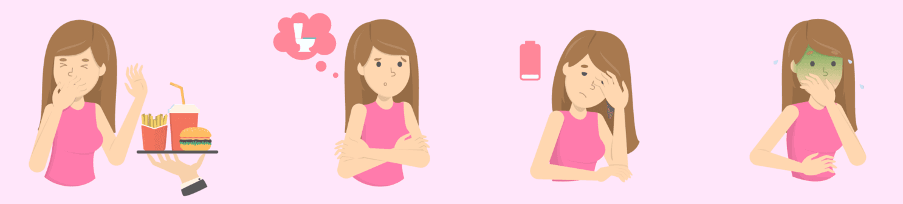

🧠 1. Reacciones emocionales
- Es normal sentir emociones mezcladas como alegría, miedo, confusión o irritabilidad en las primeras semanas.
- Muchos embarazos no son planificados, lo que puede generar preocupación o hacerte sentir insegura sobre el futuro.
- No ignores lo que sientes: reconocer tus emociones es parte del proceso.
- Habla con alguien de confianza o busca apoyo psicológico si sientes que lo necesitas.
🔬 2. Confirmación y primeras acciones
- Si sospechas de un embarazo porque tu menstruación no llegó, hazte una prueba de embarazo casera (test de orina). Puede dar resultados desde unos días antes del retraso, pero es más confiable con al menos 1 semana de retraso.
- Para mayor seguridad, hazte un análisis de sangre en un centro de salud.
- Si confirmas el embarazo, agenda tu primera cita médica o ginecológica para empezar tu control prenatal.
⚠️ Evita tomar medicamentos, suplementos o remedios caseros sin indicación profesional desde este momento.
🤰 3. Primeros cambios en tu cuerpo
- Tus senos pueden sentirse más sensibles, hinchados o doloridos.
- El útero empieza a crecer, lo que puede hacer que tengas más ganas de orinar, aunque aún no se note por fuera.
- Es común sentir mucho cansancio o sueño, incluso sin haber hecho mucho esfuerzo.
- Las náuseas o vómitos pueden aparecer, sobre todo en las mañanas, pero también en otros momentos del día.
- Puedes notar que ciertos olores te molestan más o que tu apetito cambia sin razón.
- Es posible que tengas cambios de humor o estés más sensible de lo normal. Es parte del proceso.
- La digestión puede volverse más lenta, causando estreñimiento, gases o acidez.
- Puede que tu ropa te quede más ajustada en el pecho o la cintura, aunque aún no tengas barriga.
🔍 Tu cuerpo ya está trabajando para cuidar al bebé desde las primeras semanas.
🧭 4. Lo que debes saber y hacer desde el inicio
- Muchos abortos espontáneos ocurren en las primeras semanas y, en la mayoría de casos, no son culpa de nadie. El cuerpo a veces interrumpe el embarazo de forma natural cuando detecta que el desarrollo no es el adecuado.
- Pide tu primera cita médica lo antes posible. El control prenatal debe empezar en el primer trimestre.
- Comienza a tomar ácido fólico si aún no lo has hecho. Ayuda a prevenir malformaciones en el desarrollo del bebé.
- No tomes medicamentos ni infusiones sin consultar con un profesional de salud.
- Duerme bien, aliméntate de forma equilibrada y evita el estrés y el sobreesfuerzo.
- Mantente alejada de sustancias químicas peligrosas, productos tóxicos y ambientes con mucho humo o contaminación.
📝 Estar informada desde el principio te ayuda a tomar decisiones seguras para ti y tu bebé.